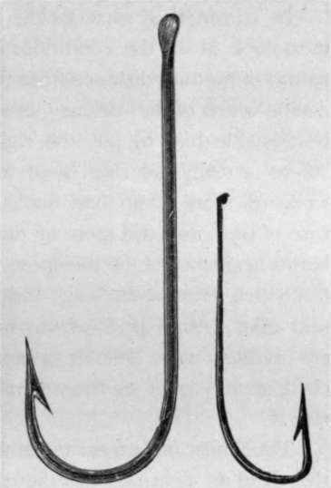

The Bass, The Labrax Of Aristotle, And Lupus Of Pliny. Continued
Description
This section is from the book "Sea Fishing", by John Bickerdyke. Also available from Amazon: Sea Fishing.
The Bass, The Labrax Of Aristotle, And Lupus Of Pliny. Continued
But to return to the bait question. Among the shoals which are feeding in some tidal race during the best of the flood tide, the bait should certainly be somewhat similar to the fry on which they are feeding. A strip of fish skin, the Sarcelle bait, a sand-eel, or a very small mackerel, all these may be tried.
Sometimes the fly fisher meets with great success. Among the many flies which may be used, I doubt if any are better than the Whitebait fly (see p. 148), the Shaldon Shiner, and the Goldfinch. The dressing of the Shaldon Shiner has already been given (p. 163). The Goldfinch is a well-known salmon fly, which is dressed as follows : Tag, gold tinsel and black floss ; tail, a golden pheasant topping ; body, gold-coloured floss ; pale yellow hackle ; blue jay at shoulder ; gold tinsel ; wing composed entirely of toppings ; red macaw ribs and black head. But bass fishers generally tell you that a piece of fish skin—gurnet belly for preference—cast like a fly is more killing than feathers and tinsel.
Above all things, the boat must not be taken right through or even very near the shoal. If the angler has not the skill or necessary tackle to cast among the fish, the boat should be worked across the tide in the fashion known as harling, a method very carefully described on pages 263 and 264. From a moored boat drift lines or float tackle is used, the tide carrying the bait down to the fish. If a small live fish of any kind, such as smelt, sand-eel, or flat fish, can be obtained for bait, so much the better. The current will often work a spinning bait.
It is not always necessary to moor the boat when drift-line fishing, for the crew can continue pulling steadily, and so keep the little craft in about the right position. In that case it is a good plan when a fish is hooked to edge the boat well to one side of the shoal, drop down with the tide while reeling in, and play him below the uncaught bass. If the water is at all clear this plan, which the fly fisher should also bear in mind, will prevent disturbing the fish and lead to further captures. If it is thick and the fish are taking freely, it may in some cases amount to a loss of time with no corresponding benefit, but it is very seldom that the manoeuvre does not repay the trouble involved.
For fishing from rocks or piers the live sand-eel may be tried, or ray's liver, lugworm, squid, a piece of mackerel, soft crab, small flat fish, or other of the many baits already mentioned. Where the fish can be approached, some ray's liver should be placed in a coarse sack and fastened to a cord and sunk by means of stones. The perfumed oils emanating from this scent-packet are very likely to attract the fish to the spot, where, if they find a tenderly arranged morsel of ray's liver awaiting them, they will surely appreciate the thoughtfulness of the angler and meet his wishes in the matter.
For use on the bottom with a leger, as, for instance, on the sandy shore of an estuary, there are few baits better than a strip of squid, but ray's liver is equally killing in some places. For these and some other baits the large round bend hook shown in the illustration is suitable. If the fish run small, or the bait is insignificant, use two or three sizes smaller. It may be either round bend or the Pennell-Limerick illustrated. A round bend gets a better hold round bones and cartilages than a narrow hook of abrupt angle.
A capital plan—one followed a good deal at Brixham, both in the harbour and outside—is to thread a small fish on a No. 3 or 4 Exeter round bend hook. This is done by means of a baiting needle which brings the snooding in at the mouth of the bait and out at its tail; in fact, the arrangement closely resembles the gorge trolling bait of pike fishers. The snooding need not be very long. To it is attached a somewhat fine unleaded line. The bait is thrown overboard and allowed to lie on the bottom. When a bass takes it he must feel no resistance whatever, and should be given a few seconds to swallow it and go off with four or five yards of line. Those who read Mr. Harmsworth's contribution will no doubt notice the resemblance between this method and tarpon fishing. In the harbour the favourite bait is a piece of squid or liver, the same unleaded tackle being used. These harbour fish are so excessively wide awake that if they feel the pull from a lead they at once drop the bait. A rod can, and in most cases should, be used with this tackle. A bait I see I have not mentioned is the guts of the pilchard, which all fish love. They make a most excellent ground bait, particularly if mixed up with pounded crabs.
Bass Hooks.
In considering what tackle and baits to use, the angler must look at all the conditions of depth, colour of the water, nature of bottom, distance from the fish, etc, and endeavour to decide which of the various methods of angling mentioned will best enable him to put the right bait in front of the fish. There is really no royal road to fishing, and rule-of-thumb work will more often than not simply lead to failure. In the case of bass, and still more of mullet, the angler has to pit his brains against some of the most cautious and cunning of the fish which swim in the sea. Indeed, of large mullet it may be said that, though perhaps not more wary than big bass, they are infinitely more difficult to capture than the highly educated chalk-stream trout or the venerable carp of some ancient fish stew.
Tiros must not expect to catch many big bass in a day. If they land an eight-pounder they may well regard it as a triumph. For numbers they must seek the whereabouts of the school bass, and if fortune favours them, and they and their boatmen are fairly expert, they may weigh their fish by the hundredweight at the end of the day. That veteran amateur sea fisherman, Mr. J. C. Wilcocks, by whose teaching in his admirable work on sea fishing I and many more greatly profited in years gone by, has told how once, fishing with a friend close to Berry Point, at Teignmouth, five hundredweight of bass were caught. I doubt if there is anyone else living who has met with such extraordinary success ; indeed, if everyone were to kill bass in this wholesale way, in the next edition of this work the article on ' Labrax lupus' might be omitted.
Continue to:
Tags
fishing, hooks, bait, fishermen, spanish mackerel, mackerel fishing